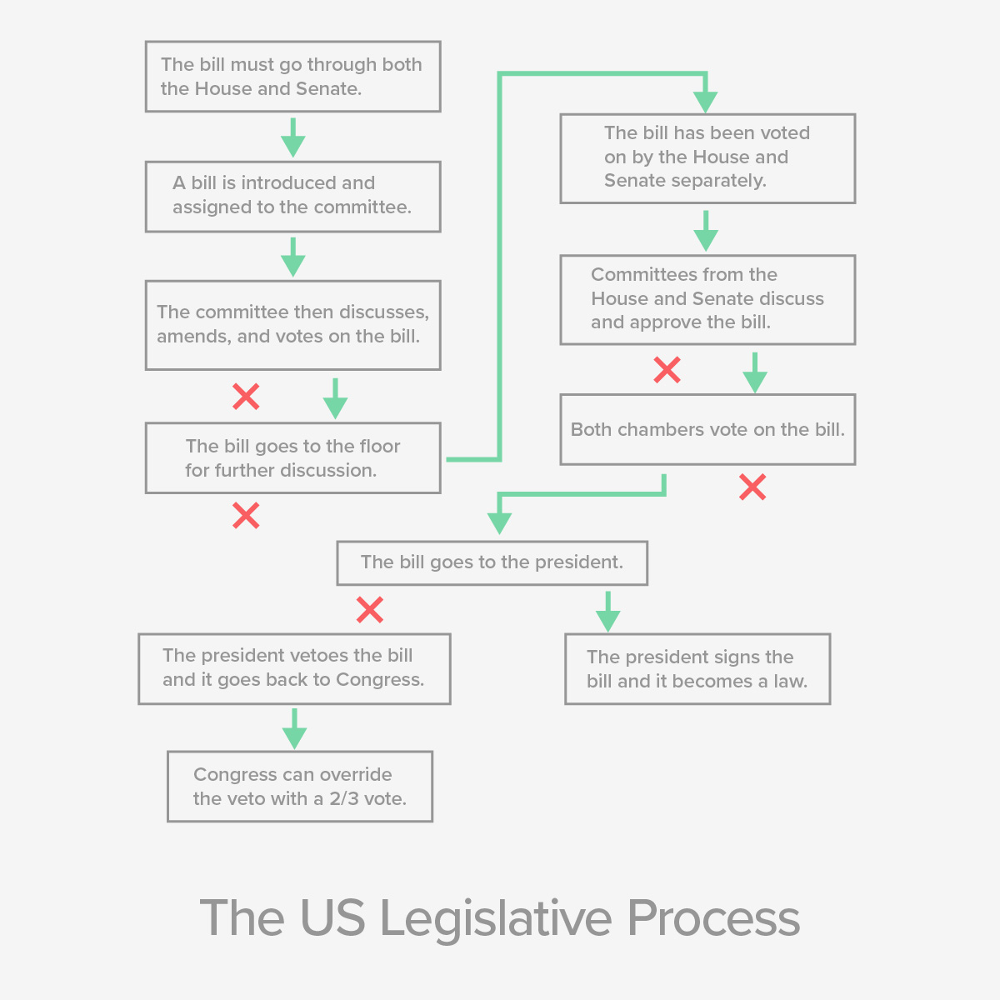

In the House and Senate, there are hundreds of bills to be introduced, oversight of federal agencies and actions to be conducted, and possibly national events to investigate. If the full House and Senate were to be involved in all of these things, it would be very difficult for this work to get done. Because of this, both chambers of Congress have created committees and subcommittees to divide up the work to make it more manageable.
Committees are divided up based on the area they cover in the government, such as education, veteran’s affairs, energy, and so on. When a bill is introduced to Congress, it’s assigned to the appropriate committee. When a matter needs to be investigated, it’s investigated by the appropriate committee.
Congress’ main job, lawmaking, follows a specific path.
Select each item to learn more.
Only a member of Congress can introduce, or formally submit for consideration, a bill.
From there, the majority party decides whether the bill gets assigned to a committee. If it doesn’t, the bill dies. Because of this, there’s a large amount of power vested in controlling the majority in each house of Congress.
Once in committee, a bill get studied, hearings are held, and changes may be made to the bill. Various committees and subcommittees work on the drafts of the legislation and often vote multiple times to draft a compromise bill that everyone can agree on. The goal is to create a bill that can be passed by both houses of Congress, and sent to the White House.
If the committee decides to approve the bill, it gets passed on to the whole House or Senate for debate, changes, and a vote. The exact same bill must pass both House and Senate to become law.
If there are differences between the House and Senate versions of a bill (and there frequently are), a committee made up of members of the House and Senate, known as a conference committee, is assembled to work out the differences and send the same version of a bill to the full House and Senate for another vote.
After all of this is done, the president still has a chance to veto a bill, which can be overridden by Congress only with a two-thirds vote in both houses.
As you can see, the “simple” task of making a law can be complicated and drawn out, and usually takes a large measure of political will. This is purposeful—the founding fathers didn’t want the laws to be changed lightly.
